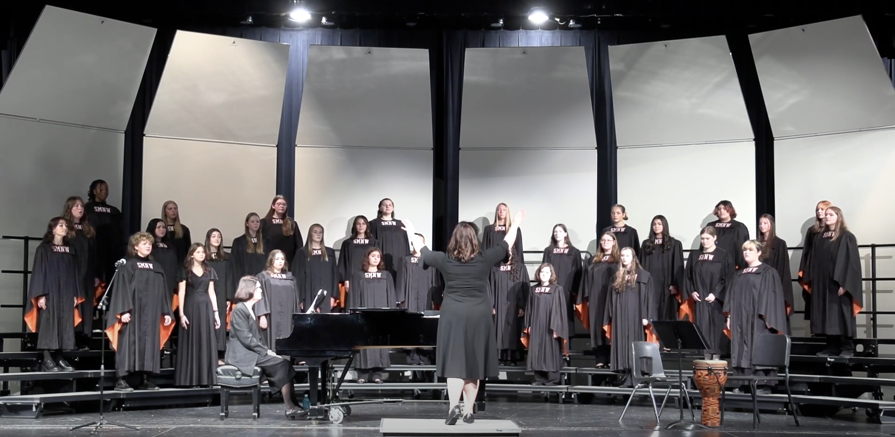
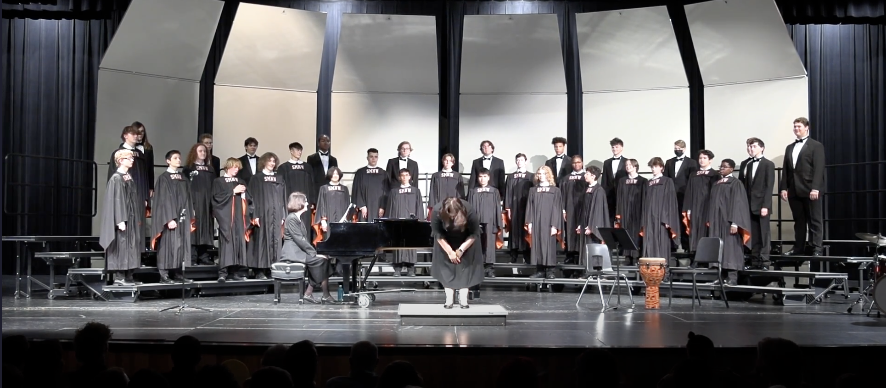
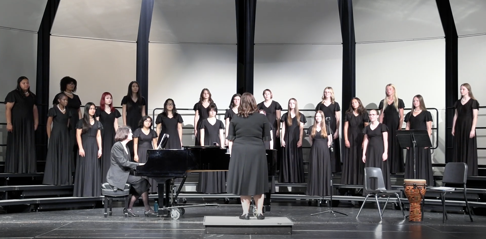
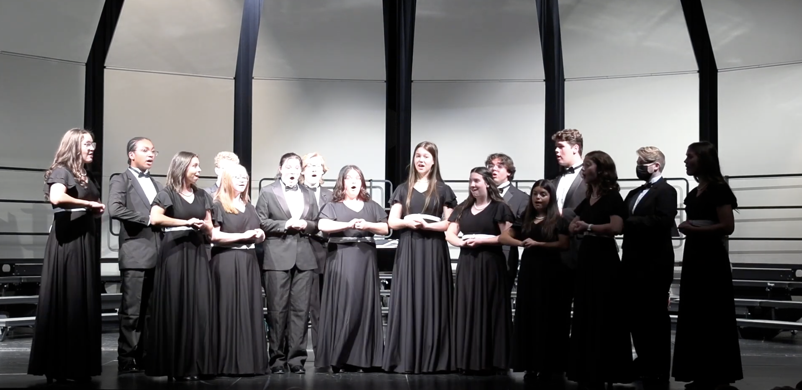

Choir: In Depth
Beyond the performances are the performers, and the ensembles that make up the program. With 5 ensembles and over 140 singers, the Shawnee Mission Northwest Choir is one of the largest, most diverse groups in the Eastern Central KMEA district.
Ensembles
-
Treble Concert Choir
The Treble Concert Choir consists of Soprano/Alto voices, often 1st or 2nd year members of the program. Concert Choir is the introductory level, with fewer featured performances than the higher level ensembles.
Treble Concert Choir performing 'Hope is a Thing with Feathers' arr. Wehrspann
-
Tenor-Bass Concert Choir
The Tenor-Bass Concert Choir consists of Tenor/Bass voices, often 1st or 2nd year members of the program, similar to Treble Choir. Concert Choir is introductory for members of the program, with the next step for TB voices often being A Capella Choir.
Combined Tenor-Bass Choirs performing 'Resilience' arr. Betinis
-
Treble Select Ensemble
Select Choir is a mid-level choir for Treble voices, who sing more advanced pieces than the Treble Concert Choir. Most commonly, 2nd year members who have auditioned become members of this choir.
Treble Select Choir performing 'Birdsong' arr. Read
-
A Capella Choir
A Capella Choir is an advanced level choir composed of combined Soprano, Alto, Tenor, and Bass voices. Featured more prominently, A Capella ranges from Sophomores to Seniors and often performs the most songs in any given concert.
A Capella Choir performing 'Measure Me Sky' arr. Hagenberg
-
Chambers
Chambers is the highest level choir offered by the Shawnee Mission Northwest Choir Program. It is a mixed voice choir, with all of it's members being in A Capella Choir as well. Chamber Choir is the most prestigious, and is mostly Juniors and Seniors.
Chamber Choir performing 'Wannabe' arr. Howe